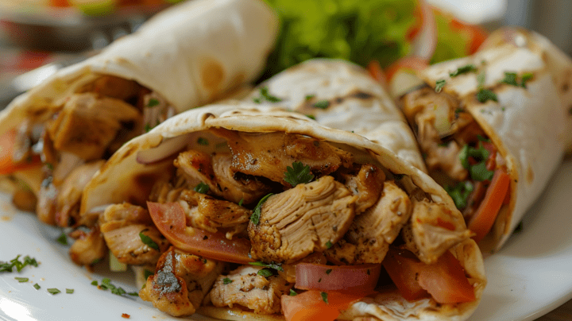

Shawarma>
Home

Description
Shawarma is a flavorful and aromatic Middle Eastern dish that has gained popularity worldwide.
It consists of thinly sliced marinated meat, typically lamb, chicken, or beef, that is cooked on a vertical
rotisserie.
The meat is then wrapped in warm pita bread along with fresh vegetables, pickles, and a variety of sauces such
as tahini or garlic sauce.
Shawarma is known for its rich spices and succulent texture, making it a favorite street food
and casual dining option.
In addition to being a delicious meal on the go, shawarma has gained international popularity and is now enjoyed
in many countries around the world. It is versatile, allowing for creative combinations of toppings and sauces
to suit different palates. Beyond its taste, shawarma represents the vibrant culinary traditions of the Middle
East, bringing together both technique and culture in a simple yet satisfying dish that can be enjoyed at casual
eateries, food trucks, or at home.
Ingredients
- 1 lb thinly sliced chicken, beef, or lamb
- 1/4 cup plain yogurt
- 2 tbsp olive oil
- 2 tbsp lemon juice
- 3 cloves garlic, minced
- 1 tsp ground cumin
- 1 tsp ground paprika
- 1/2 tsp ground turmeric
- 1/2 tsp ground cinnamon
- 1/4 tsp cayenne pepper (optional)
- Salt and pepper to taste
- Pita bread or flatbreads for serving
- Sliced cucumbers, tomatoes, onions, and lettuce for toppings
- Tahini sauce or garlic sauce for drizzling
Steps
- In a bowl, combine the yogurt, olive oil, lemon juice, minced garlic, cumin, paprika, turmeric, cinnamon,
cayenne pepper (if using), salt, and pepper to create the marinade.
- Add the thinly sliced meat to the marinade, ensuring all pieces are well coated. Cover and refrigerate for
at least 1 hour, or overnight for best results.
- Preheat a grill or skillet over medium-high heat. Cook the marinated meat in batches until fully cooked and
slightly charred, about 5-7 minutes per side.
- Warm the pita bread or flatbreads in a dry skillet or oven.
- To assemble the shawarma, place a generous amount of cooked meat onto each piece of pita bread.
- Add your desired toppings such as sliced cucumbers, tomatoes, onions, and lettuce.
- Drizzle with tahini sauce or garlic sauce for added flavor.
- Roll up the pita bread to enclose the fillings and serve immediately.
- Enjoy your delicious homemade shawarma!